Vehicle Class (Im)Balance
I my view, the game became more boring after WG added Vehicle Class Matching rules into the MatchMaker (update 5.1). The exact vehicle class matching rules have been adjusted since, but basically the Vehicle Class Matching limits the number of Tank Destroyers and Light Tanks per team and makes sure there is only +/-1 tank difference between the teams across the vehicle classes. This results mirrored teams causing monotonic battles. In my view, most of the vehicle class matching rules should be abolished, but I know well how I am in the minority here.
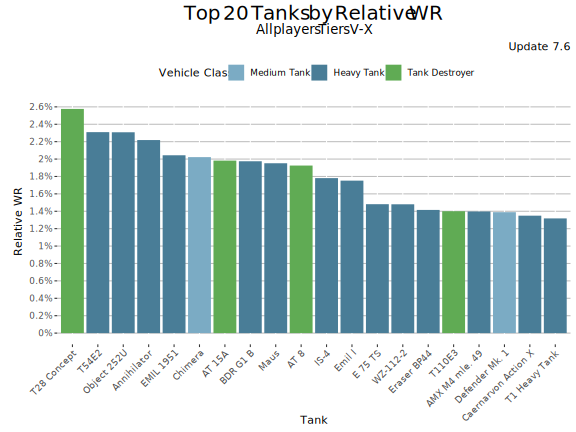
But the MM is not the main story of this post, but a long intro to the issue at hand - the imbalance of the vehicle classes in the game. I believe WG tried to solve fundamentally a balancing issue through the Vehicle Class Matching -rules. And while there is a logic in their thinking, they could have fixed the root cause instead and do better job balancing the tanks. When looking at the best performing tanks chart above, you can notice how light tanks are completely missing from the list and how the mediums are severely under presented. Heavies and heavily armored TDs rule.
Performance Vehicle Classes
The average performance of vehicle classes varies per tier and per player skill class. But there are certain patterns I am going to show below. I have used the Update 7.6 data since that is the latest update with full stats available at the moment.
Tier X
Let’s first look at the tier X.
All players
While the absolute differences are not massive, it is clear that the heavy tanks out-perform all the other vehicle classes when looking the stats over all the players. The light tanks perform the worst as one would expect due to the high skill-floor of those. The heavies on the other hand are often well-armored and more forgiving to drive.
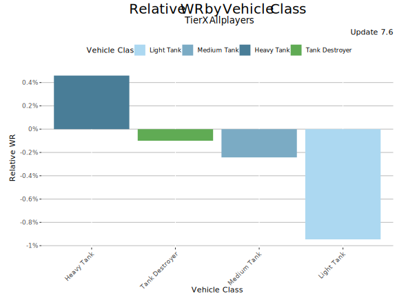 N = 111270
Let’s now look the performance in different player skill categories.
Players with < 45% WR at Tier X
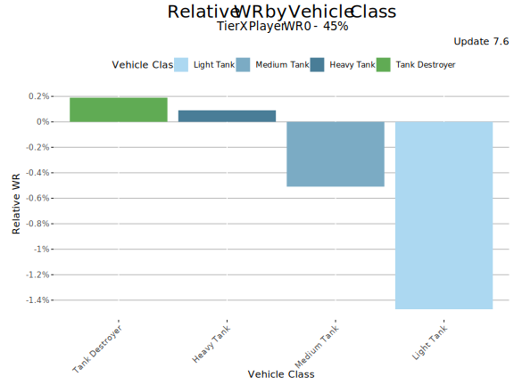 N = 30275
As expected, the less-skilled players struggle a lot with the light tanks and do the best with the tank destroyers that allow them to keep distance to the front line. But the stats of the low-skilled players cannot be used for balancing the tanks and vehicle classes.
Players with 45-55% WR at Tier X
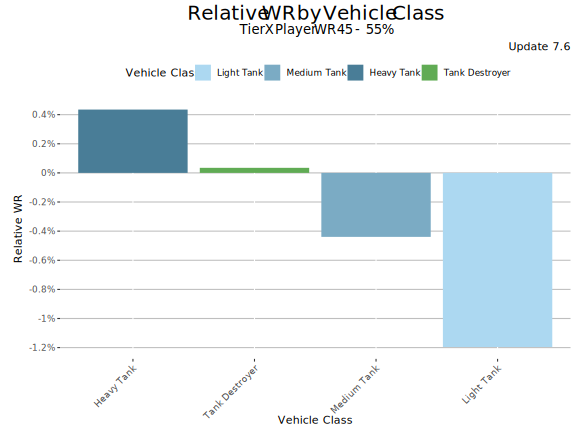 N = 49037
For an average tier X player, the heavy tanks perform the best and the light tanks clearly the worst. The tank destroyers are almost perfectly balanced (on average). This is very much the expected result.
Players with 55-65% WR at Tier X
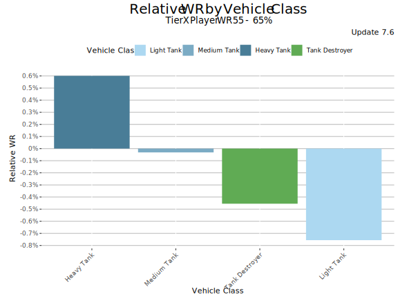 N = 25326
Wargaming has communicated it bases its balancing decisions (commercial motivations set aside) to the performance of the “players with 55-65% WR”. What exacly does the “players with 55-65% WR” mean is not completely clear, but this player segment should be close to Wargaming’s “vehicle balancing focus group”.
For the 55-65% WR players, the heavy tanks perform even better than for the average players. The medium tanks have improved too and are now perfectly balanced. The tank destroyers have dropped to the 3rd spot and the light tanks continue to drag behind the rest. Clearly the skill-floor of the light tanks is still too high for this player category.
Players with 65%+ WR at Tier X
 N = 6632
N = 6632
When looking at the very good players (WR 65%+ at tier X), the picture is again bit different. The light tanks perform clearly better are now very well balanced along with the medium tanks. The heavy tanks still perform the best and the tank destroyers have dropped to the last underperform significantly (on average). There are exceptions though like T110E3 and AMX 50 Foch (155)).
Players with 75%+ WR at Tier X
I also checked how the Ultra-Super-Unicums (players with 75%+ WR at the tier X) perform. First of all, there are not that many of them (only 677 in the database), but that is still a solid number and there is a solid number of battles (199564) behind the numbers.
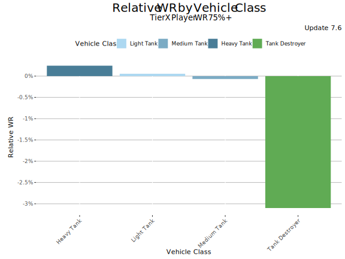 N = 677
The gaps between the heavy tanks and the medium and light tanks have now shrunk to irrelevant. But the tank destroyers perform significantly worse. The -3% relative WR difference is at the same level as the difference between Annihilator and Challenger.
Tier X Conclusion
It is clear that the heavy tanks outperform all the tank-classes and the tank destroyers underperform (on average). The medium) and light tanks seem balanced although the light tanks have very high skill-floor. Naturally the tank balancing has to be done tank by tank and WG should treat e.g. T110E3 and Grille 15 differently.
Tier IX
All players
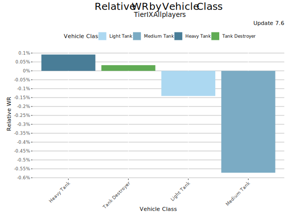 N = 90046
The vehicle classes' average performance at Tier IX is bit different than what could be expected. Seeing the light tanks to out-perform the medium tanks among all the players is odd. More about that below.
Players with < 45% WR at tier IX
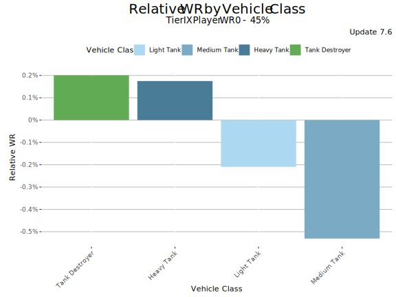 N = 20889
The results for the less-skilled players (tier IX WR < 45%) are quite as expected, except that the light tanks out-perform the medium tanks. This is an indication that the tier IX light tanks are very strong strong compared to the medium tank counterparts. The light tanks should have a high skill-floor.
Players with 45-55% WR at tier IX
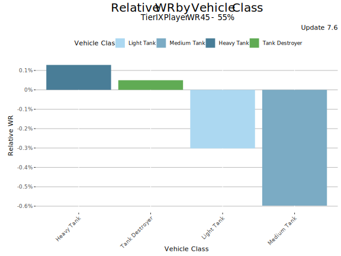 N = 40541
For the average players (45-55% WR at tier IX), the heavy tanks outperform the tank destroyers and the medium tanks drag behind others.
Players with 55-65% WR at tier IX
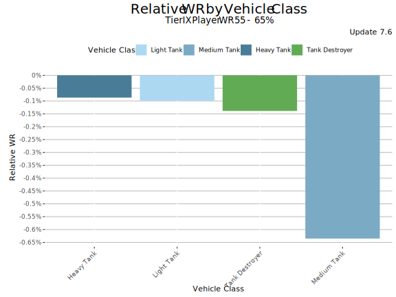 N = 22243
The WG’s “vehicle balancing focus group” clearly reveals how the tier IX medium tanks underperform. This player category should be able to leverage the better mobility of the medium tanks, but those still perform the worst with a margin .
Players with 65%+ WR at tier IX
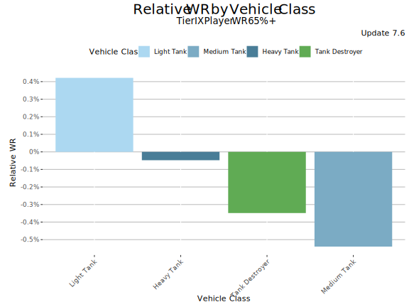 N = 6373
The vehicle class performance in the hands of very good players (Tier IX WR 65%+) clearly show the imbalances at tier IX. The light tanks are outperforming the rest and even the tank destroyers are outperforming the medium tanks. The poor performance of the tier IX medium tanks in the hands of the most skilled players shows how the tier’s medium tanks need some buffs. However, the absolute differences are not massive: less than 1% between the best and worst performing vehicle class. The Tier IX is probably the most balanced tier in the game at the moment.
Tier VIII
Tier VIII is the most popular tier in the game.
All players
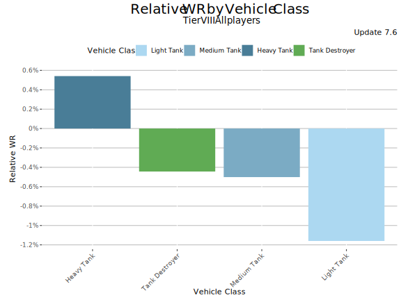 N = 177864
At tier VI, the heavy tanks perform the best and the tank destroyers and medium tanks share the 2nd place. The light tanks underperform the other vehicle classes (as they should for all the players).
Players with < 45% WR at Tier VIII
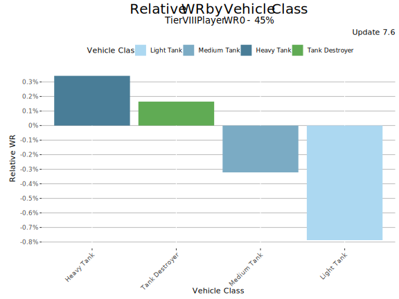 N = 39555
The heavy tanks perform the best in the hands of less-skilled players, and the order of vehicle classes is very much in line with the expectations.
Players with 45-55% WR at Tier VIII
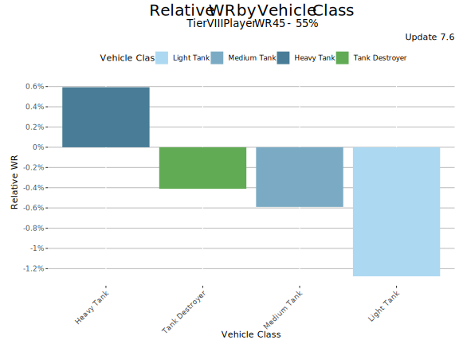 N = 77589
The order stays the same for the average players. No surprises here.
Players with 55-65% WR at Tier VIII
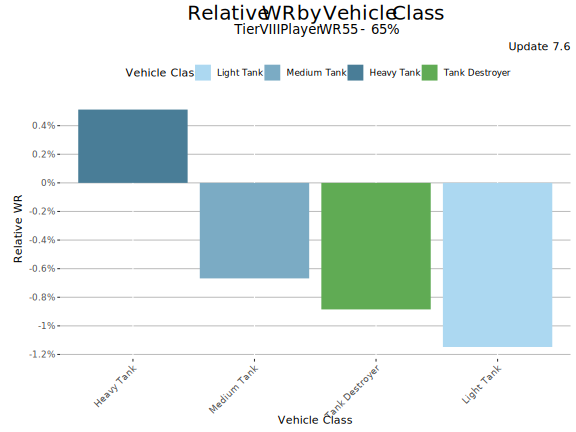 N = 47062
For the 55-65% player segment the situation changes a bit and the medium tanks take the 2nd place. The poor performance of the light tanks in the hands of good players is not normal but a sign of severe underperformance of the tier VIII LTs. The heavy tanks' lead is so expected that it is easy take it for granted even though it would not have to be so.
Players with 65%+ WR at Tier VIII
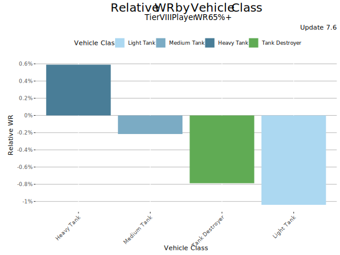 N = 13658
The heavy tanks continue to rule and the light tanks continue to struggle even in the hands of very good players. This is a clear sign of the underperformance of the tier VIII light tanks.
Tiers V-X
Let’s now look the situation across tiers V-X. The graph below plots the performance of vehicle classes per tier. I am plotting the charts for all the players, and WR 55-65% and WR 65%+ player categories.
All players
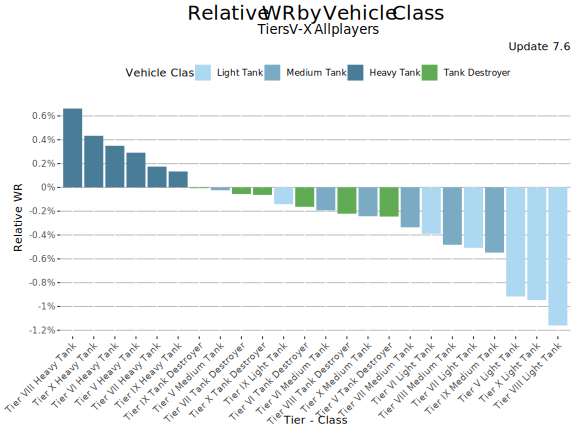 N = 326948
Players with 55-65% WR
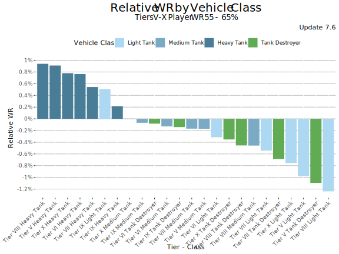 N = 132309
Players with 65%+ WR
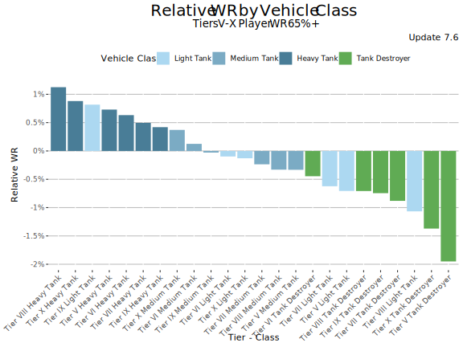 N = 41339
Conclusions
It should evident from the charts above how the heavy tanks overperform in the game, and how the tank destroyers and light tanks underperform with Tier IX light tanks being a notable exception. The differences between the ends of the spectrum are sizable.
How to re-balance the game again?
It is easier to point out issues than fix those. And while each tier (and tank) have to be balanced separately, the main re-balancing directions are clear:
- The heavy tanks deserve nerfs across the tiers with tier IX being an exception.
- The light tanks deserve buffs with tier IX being an exception
- The tank destroyers deserve buffs across the tiers
The difficult part really is how to re-balance.
I personally think nerfing the heavy tanks' traverse and turret traverse speeds should be the main ways to achieve the balancing objectives. I think the WG’s idea of increasing the heavy tanks' HP pools was a good one and inline with the role of the heavy tanks. Slightly reducing the mobility of the heavy tanks would enforce the differences between medium and heavy tanks and suit their respective roles.
For the tank destroyers, I would probably buff camo while stationary and DPM. Buffing TDs, especially the campy, big alpha ones is a controversial topic since many TDs are already hugely popular despite their poor performance. Players just love the big-alpha tanks for the occasional giggles. Buffing those could change the meta towards more “campy” direction. And this is where the MM’s vehicle class matching rules can come handy. Limiting the number of TDs entering the battles would increase the queuing times for those while keeping the battles clean from negative camping-effect of the TDs. This is the only vehicle class matching rule I personally support. Probably three TDs per team sounds like the right limit - unless it becomes a norm.
Buffing the light tanks is harder. Some of the light tanks deserve engine buffs for better acceleration. Also improved view range could improve the performance while supporting the unique role of the light tanks.
Having said all this, I am certain WG’s balancing department has far more competence on this area. They know what they are doing even though commercial motives sometimes overrule their balancing rulebook (Annihilator, Smasher, Gravedigger, etc.). The good news is that the Grille line tank destroyers are about to receive buffs in update 7.8 in the form of new consumables (especially Spall Liner). So I believe WG is clearly aware of the current imbalances.
I hope you enjoyed this longer-than-intended read. Happy tanking and stay safe!
-

This work is licensed under a Creative Commons Attribution-ShareAlike 4.0 International License.
-

-

Blitzanalysiz() is a player-created website for World of Tanks: Blitz and developed in accordance with WG DPP. This site is not an official Wargaming or World of Tanks: Blitz website. World of Tanks Blitz and Wargaming are trademarks of Wargaming.net Limited. Game content and materials copyright © Wargaming.net. All rights reserved.